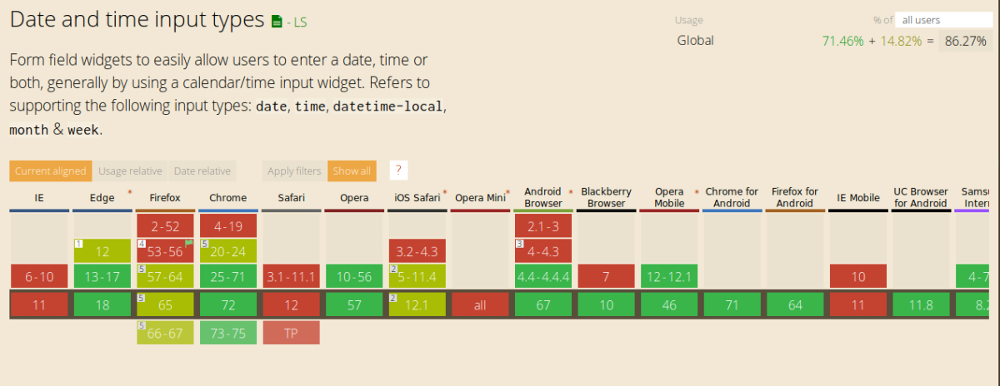

<!doctype html>
<html>
	<head>
		<meta charset="utf-8">
		<meta name="viewport" content="width=device-width, initial-scale=1.0, maximum-scale=1.0, user-scalable=no">

		<title>HTML 5 - Nouveautés</title>

		<link rel="stylesheet" href="css/reveal.css">
		<link rel="stylesheet" href="css/theme/black.css">

		<!-- Theme used for syntax highlighting of code -->
		<link rel="stylesheet" href="lib/css/zenburn.css">

		<!-- Printing and PDF exports -->
		<script>
			var link = document.createElement( 'link' );
			link.rel = 'stylesheet';
			link.type = 'text/css';
			link.href = window.location.search.match( /print-pdf/gi ) ? 'css/print/pdf.css' : 'css/print/paper.css';
			document.getElementsByTagName( 'head' )[0].appendChild( link );
		</script>
	</head>
	<body>
		<div class="reveal">
			<div class="slides">
				<section data-markdown>
					<script type="text/template">
						# HTML 5

						## Les nouveautés
					</script>
				</section>
				<section data-markdown>
					<script type="text/template">
						## Qu'est-ce que HTML 5 ?

						Des nouvelles balises

						De nouvelles fonctionnalités CSS

						De nouvelles API et syntaxe Javascript
					</script>
				</section>
				<section data-markdown>
					<script type="text/template">
						## Selon Mozilla

						Sémantique

						Connectivité

						Hors-connexion & stockage

						Multimédia

						Rendu 2D/3D et effets

						Performance & intégration

						Accès aux périphériques 

						Style
					</script>
				</section>
				<section data-markdown>
					<script type="text/template">
						## Date de sortie et mises à jour

						HTML5 finalisé en 2014

						Mais mis à jour régulièrement
						
						Implémentation continue
					</script>
				</section>
				<section data-markdown>
					<script type="text/template">
						## Compatibilité #1

						Navigateur récents tous compatibles sur les bases

						Attention : fonctionnalités pas toujours accessibles
						
						Utilisation des prefixes (moz, webkit)
					</script>
				</section>
				<section data-markdown>
					<script type="text/template">
						## Compatibilité #2

						[caniuse.com](https://caniuse.com) => Référence

						</img>
						_Exemple de "piège"_
					</script>
				</section>
				<section data-markdown>
					<script type="text/template">
						## Compatibilité : solutions

						Abstraction via Librairies (bootstrap, jQuery)

						Polyfill ([html5shiv](https://github.com/aFarkas/html5shiv))

						Transpilers ([Babel](https://babeljs.io/))
					</script>
				</section>
				<section data-markdown>
					<script type="text/template">
						## HTML5 : Sémantique
						### Sections et structure

						`section`

						`header`

						`footer`

						`output`

						`article`

						`nav`

						`aside`

						`hgroup`

						`figure`

						`figcaption`

						`main`
					</script>
				</section>
				<section data-markdown>
					<script type="text/template">
						## HTML5 : Sémantique
						### Multimédia

						`audio`

						`video` et `track`
					</script>
				</section>
				<section data-markdown>
					<script type="text/template">
						## HTML5 : Sémantique
						### Formulaires
						`input` type     

	datetime
    datetime-local
    date
    month
    week
    time
    tel
    number
    range
    email
    url
    search
    color

					</script>
				</section>
				<section data-markdown>
					<script type="text/template">
						## HTML5 : Sémantique
						### Autres aditions

						MathML

						`mark`

						`data`

						`time`
					</script>
				</section>
				<section data-markdown>
					<script type="text/template">
						## HTML5 : Connectivité

						Web Sockets

						Evénements côté serveur

						WebRTC
					</script>
				</section>
				<section data-markdown>
					<script type="text/template">
						## HTML5 : Hors connexion et stockage

						Application cache

						Evénements `online`/`offline`

						`sessionStorage`/`localStorage`

						`indexedDB`

						File API
					</script>
				</section>
				<section data-markdown>
					<script type="text/template">
						## HTML5 : Multimédia

						`audio` et `video`

						WebRTC

						Camera API

						Track et WebVTT
					</script>
				</section>
				<section data-markdown>
					<script type="text/template">
						## HTML5 : Rendu 2D/3D & effets

						Canvas 2D

						Text API

						WebGL (Canvas 3D)

						SVG
					</script>
				</section>
				<section data-markdown>
					<script type="text/template">
						## HTML5 : Performance & Intégration

						Web Workers

						History API

						`contentEditable`

						Drag & Drop

						Fullscreen & Pointer Lock API

						Web-based protocol handlers
					</script>
				</section>
				<section data-markdown>
					<script type="text/template">
						## HTML5 : Accès aux périphériques

						Camera API

						Touch event

						Géolocalisation

						Orientation du périphérique (portait ou paysage)

						Pointer Lock API
					</script>
				</section>
				<section data-markdown>
					<script type="text/template">
						## HTML5 : Style

						Camera API

						Touch event

						Géolocalisation

						Orientation du périphérique (portait ou paysage)

						Pointer Lock API
					</script>
				</section>				
			</div>
		</div>

		<script src="lib/js/head.min.js"></script>
		<script src="js/reveal.js"></script>

		<script>
			// More info about config & dependencies:
			// - https://github.com/hakimel/reveal.js#configuration
			// - https://github.com/hakimel/reveal.js#dependencies
			Reveal.initialize({
				dependencies: [
					{ src: 'plugin/markdown/marked.js' },
					{ src: 'plugin/markdown/markdown.js' },
					{ src: 'plugin/notes/notes.js', async: true },
					{ src: 'plugin/highlight/highlight.js', async: true, callback: function() { hljs.initHighlightingOnLoad(); } }
				]
			});
		</script>
	</body>
</html>
